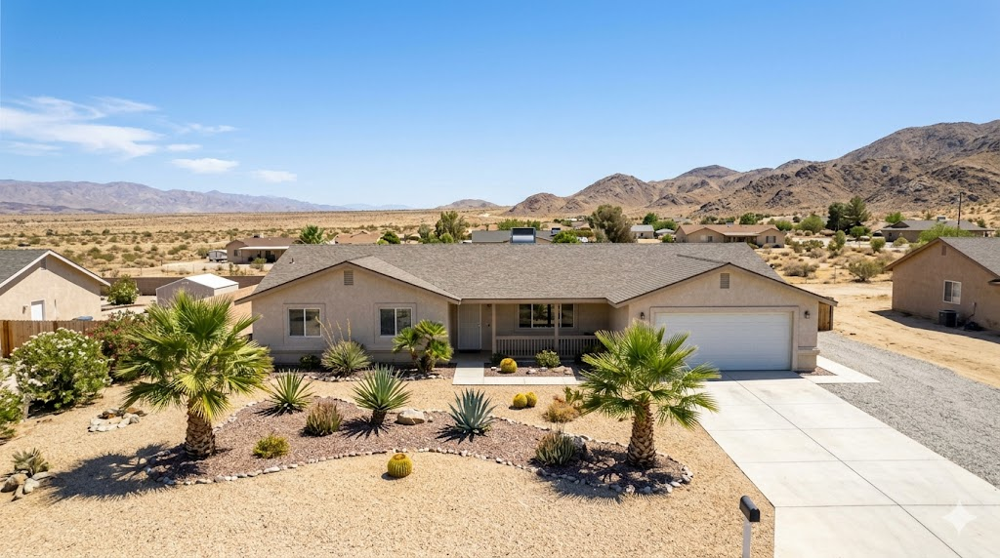

Thousand Palms is an unincorporated community in the central Coachella Valley, known for the Coachella Valley Preserve and its natural palm oases. The community offers a quieter, more rural feel than the incorporated cities while still providing convenient access to the valley's amenities. Its real estate market serves buyers looking for space, privacy, and value in a central location.
Thousand Palms features a mix of single-family homes, mobile/manufactured homes, and some equestrian and hobby farm properties on larger lots. As an unincorporated area under Riverside County jurisdiction, properties here have different zoning and permit considerations than incorporated cities. Values tend to be moderate, positioning Thousand Palms as an affordable alternative to neighboring Palm Desert and Rancho Mirage.

Coachella Valley Preserve, Thousand Palms Oasis, central valley location, proximity to I-10, Classic Club golf course.
Contact Brian Ward Appraisal to request a certified residential appraisal in Thousand Palms. Contact us to discuss your timeline.
Phone: (760) 534-5449
Email: contact@brianward.com
Online: Request an appraisal online
We also provide certified appraisal services in nearby communities: